Github Readme.md 잔디 먹는 뱀 만들기
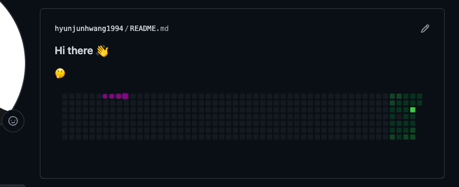
일정 시간마다 자신의 잔디 정보를 기준으로 이미지 형태가 자동으로 만들어지고,
연한 색 -> 진한 색 잔디 순서로 먹고 원위치로 돌아갑니다.
repo, directory 만들기
본인 계정명 Repo 생성 및, .gihub/workflows를 생성해 줍니다.
repository 생성 시 readme.md 포함해서 만들어주세요!
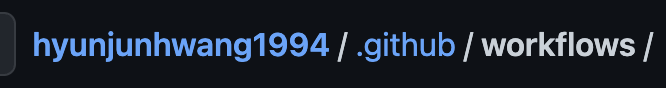
자신 본인 id로 레파지토리를 만들고 Readme.md를 만들고 수정하면
자신의 계정 프로필 방문 시 소개 페이지를 만든 것이 됩니다.
token 발급받기
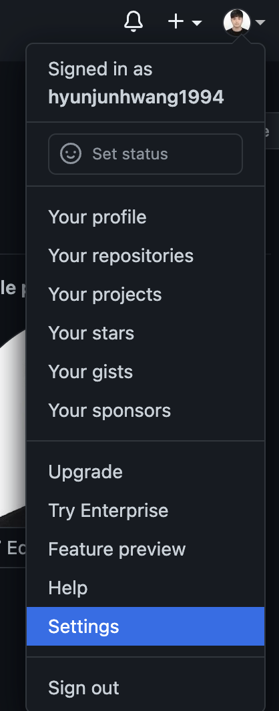
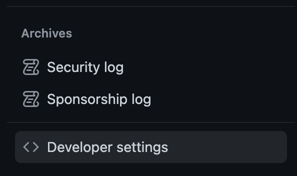
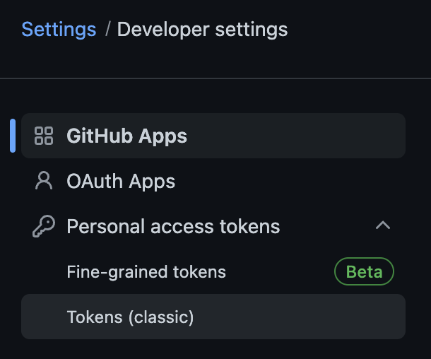
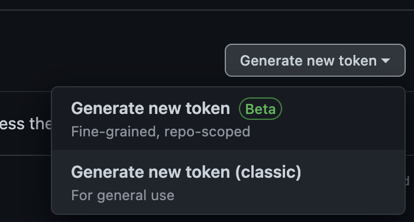
옵션 체크 후 제너레이트 클릭
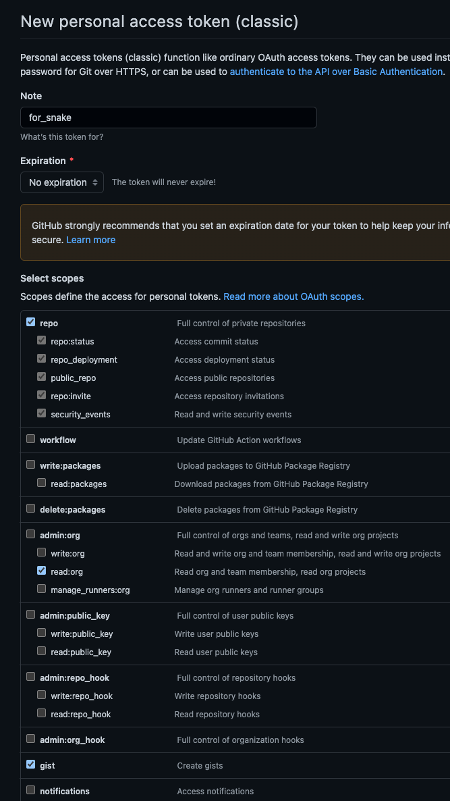
토큰 관련된 정보나 파일은 유출되면 안 됩니다!!
snake.yml
아까 만들었던 폴더에 snake.yml을 만들고 아래의 내용을 붙여 넣고,
본인의 계정명을 적어주세요 -> 영문 아이디만 적어주세요.
snake.yml 파일은 편집기로 하셔서 push 하셔도 되고, 깃허브에서 직접 생성하셔도 됩니다.
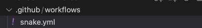
# 커밋 먹는 뱀 그래프 생성을 위한 GitHub Action🐍
name: Generate Snake
# Action이 언제 구동될지 결정
on:
schedule:
# 6시간마다 한 번(수정 가능)
- cron: "0 */6 * * *"
# 자동으로 Action이 실행되도록 함
workflow_dispatch:
jobs:
build:
runs-on: ubuntu-latest
steps:
- uses: actions/checkout@v2
# 뱀 생성
- uses: Platane/snk@master
id: snake-gif
with:
github_user_name: !!!본인의 깃허브 계정명 입력 ex) hongildong23 !!!
# output branch에 gif, svg를 각각 생성
gif_out_path: dist/github-contribution-grid-snake.gif
svg_out_path: dist/github-contribution-grid-snake.svg
- run: git status
# 변경사항 push
- name: Push changes
uses: ad-m/github-push-action@master
with:
github_token: $
branch: master
force: true
- uses: crazy-max/ghaction-github-pages@v2.1.3
with:
target_branch: output
build_dir: dist
env:
GITHUB_TOKEN: $
GITHUB_TOKEN 부분(아래 참고)에 ${{ secrets.GITHUB_TOKEN }} 내용 2줄 추가해 주세요.
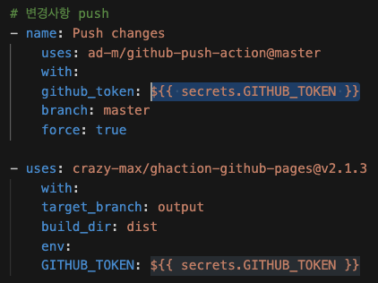
저장 후 Push 해주세요.
Actions
그다음 본인의 레파지토리 -> Actions를 들어가면 아래처럼
Generate Snake가 생겨 있습니다. 들어갑시다!
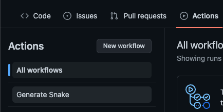
자 이제 Run workflow만 눌러주면 실행됩니다.
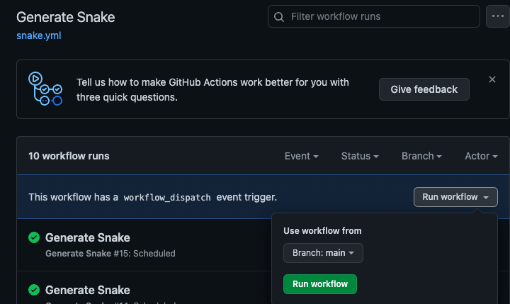
이제 본인의 깃허브 계정명 레파지토리 -> readme.md에 아래의 내용만 추가해 주면 자동으로 생성됩니다. (URL 주소에 아이디 본인의 아이디로 변경하세요.)

아까 snake.yml에서 적었던 시간(기본 설정 6시간)마다 본인의 잔디 정보에 따라 Gif(움직이는 뱀))이 재생성되어 프로필 readme.md에 보이게 됩니다.